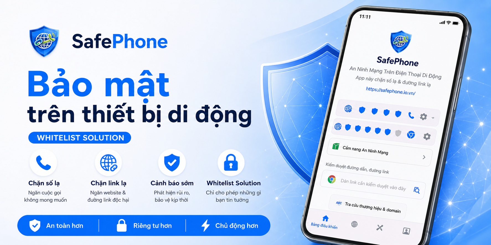

Danh sách các từ khoá nghe là biết lừa đảo
Trong nhiều vụ lừa đảo, kẻ gian không chỉ dựa vào công nghệ mà còn khai thác tâm lý con người. Chúng thường sử dụng những cụm từ quen thuộc, đánh vào sự sợ hãi, lòng tham, sự tò mò hoặc mong muốn lấy lại những gì đã mất. Sau một thời gian, nhiều từ khóa đã xuất hiện lặp đi lặp lại trong hàng nghìn vụ việc khác nhau đến mức chỉ cần nghe thấy là các chuyên gia an ninh mạng có thể nhận ra dấu hiệu bất thường.
Điều đáng chú ý là các từ khóa này không phải lúc nào cũng mang ý nghĩa tiêu cực. "Cập nhật sinh trắc học", "sở hữu kỳ nghỉ" hay "thu hồi tài sản" đều có thể xuất hiện trong các hoạt động hợp pháp. Tuy nhiên, các đối tượng lừa đảo thường lợi dụng chính những khái niệm quen thuộc đó để tạo dựng lòng tin và che giấu mục đích thật sự của mình.
Giai đoạn 2024–2026 chứng kiến sự bùng phát của nhiều hình thức lừa đảo mới và biến tướng từ các kịch bản cũ. Các cụm từ như "thu hồi vốn treo", "lấy lại tiền bị lừa", "làm nhiệm vụ nhận hoa hồng", "sở hữu kỳ nghỉ", "lợi nhuận cam kết", "cập nhật sinh trắc học" hay "công an điều tra" xuất hiện ngày càng dày đặc trong các cuộc gọi, tin nhắn, email và bài đăng trên mạng xã hội. Hiểu được ý nghĩa thực sự đằng sau những từ khóa này sẽ giúp bạn nhận diện sớm các dấu hiệu bất thường trước khi trở thành nạn nhân tiếp theo.
Thu hồi vốn treo / Lấy lại tiền bị lừa
Đây là một trong những hình thức lừa đảo phát triển mạnh trong giai đoạn 2024–2026 vì nhắm vào những người đã từng là nạn nhân của các vụ lừa đảo trước đó. Sau khi một người bị mất tiền do đầu tư giả mạo, tiền điện tử, sàn ngoại hối hoặc làm nhiệm vụ online, thông tin của họ thường bị rao bán hoặc trao đổi trong các nhóm tội phạm.
Các đối tượng sẽ chủ động liên hệ và tự nhận là luật sư, chuyên gia tài chính, công ty thu hồi tài sản hoặc thậm chí là cơ quan chức năng. Chúng hứa hẹn có thể giúp nạn nhân lấy lại số tiền đã mất với tỷ lệ thành công rất cao.
Các từ khóa thường xuất hiện gồm:
- Thu hồi vốn treo
- Lấy lại tiền bị lừa
- Khôi phục tài sản
- Hoàn tiền 100%
- Hỗ trợ pháp lý
- Phí hồ sơ
- Phí xác minh
- Chuyên gia truy vết dòng tiền
Kịch bản thường kết thúc bằng việc nạn nhân phải đóng thêm nhiều khoản phí khác nhau và tiếp tục mất tiền lần thứ hai.
Làm nhiệm vụ nhận hoa hồng
Đây là mô hình lừa đảo phổ biến nhất trên Telegram, Zalo, Facebook và TikTok trong nhiều năm gần đây. Ban đầu nạn nhân được mời tham gia các công việc đơn giản như thích video, đánh giá sản phẩm hoặc theo dõi tài khoản mạng xã hội.
Để tạo lòng tin, kẻ gian thường trả một khoản tiền nhỏ cho các nhiệm vụ đầu tiên. Sau đó nạn nhân được yêu cầu nạp tiền để tham gia các "nhiệm vụ đặc biệt" với mức hoa hồng cao hơn.
Các từ khóa thường gặp:
- Làm nhiệm vụ
- Nhận hoa hồng
- Việc nhẹ lương cao
- Tăng tương tác
- Like video kiếm tiền
- Nạp tiền mở khóa
- Nhiệm vụ VIP
- Hoàn thành đơn hàng
- Hệ thống bị lỗi, cần nạp thêm
Khi số tiền nạp ngày càng lớn, hệ thống sẽ liên tục báo lỗi hoặc yêu cầu thực hiện thêm nhiệm vụ để rút tiền, khiến nạn nhân bị mắc kẹt trong vòng xoáy nạp tiền.
Sở hữu kỳ nghỉ
"Sở hữu kỳ nghỉ" (Timeshare) là mô hình kinh doanh hợp pháp tại nhiều quốc gia. Tuy nhiên tại Việt Nam, cụm từ này thường xuất hiện trong các vụ việc gây tranh cãi liên quan đến quảng cáo quá mức hoặc tư vấn thiếu minh bạch.
Nạn nhân thường được mời tham dự các sự kiện giới thiệu du lịch và được thông báo rằng mình đã trúng thưởng hoặc nhận được voucher nghỉ dưỡng miễn phí.
Sau khi tham dự, họ bị thuyết phục ký hợp đồng giá trị lớn với lời hứa về quyền lợi nghỉ dưỡng lâu dài.
Các từ khóa cần chú ý:
- Sở hữu kỳ nghỉ
- Voucher nghỉ dưỡng
- Du lịch miễn phí
- Nghỉ dưỡng 5 sao
- Timeshare
- Ưu đãi duy nhất hôm nay
- Đặt cọc giữ quyền lợi
- Nâng hạng thành viên
Bất kỳ chương trình nào tạo áp lực phải ký hợp đồng hoặc thanh toán ngay trong ngày đều cần được xem xét cẩn thận.
Lợi nhuận cam kết
Trong đầu tư tài chính, không ai có thể đảm bảo lợi nhuận tuyệt đối. Vì vậy, khi xuất hiện cụm từ "lợi nhuận cam kết", đây thường là dấu hiệu cần cảnh giác.
Các đối tượng thường quảng bá các dự án đầu tư với mức lợi nhuận bất thường và khẳng định gần như không có rủi ro.
Các từ khóa phổ biến:
- Lợi nhuận cam kết
- Lãi cố định
- Không rủi ro
- Thu nhập thụ động
- Robot giao dịch
- Đầu tư an toàn
- Lãi suất cao
- Hoàn vốn nhanh
- Bảo đảm lợi nhuận
Đây là đặc điểm thường thấy trong các mô hình Ponzi, đa cấp tài chính hoặc sàn đầu tư giả mạo.
Cập nhật sinh trắc học
Từ năm 2024, các quy định liên quan đến xác thực sinh trắc học trong lĩnh vực ngân hàng được triển khai rộng rãi. Các đối tượng lừa đảo đã nhanh chóng lợi dụng sự thay đổi này để tạo ra các chiến dịch giả mạo.
Nạn nhân nhận được tin nhắn hoặc cuộc gọi yêu cầu cập nhật sinh trắc học thông qua một đường link hoặc ứng dụng lạ.
Các từ khóa thường xuất hiện:
- Cập nhật sinh trắc học
- Xác thực khuôn mặt
- Kích hoạt tài khoản
- Cập nhật CCCD
- Tài khoản sẽ bị khóa
- Xác minh thông tin
- Đồng bộ dữ liệu dân cư
- Đăng nhập xác thực
Mục tiêu cuối cùng thường là đánh cắp thông tin đăng nhập ngân hàng hoặc dụ người dùng cài đặt ứng dụng chứa mã độc.
Giả danh Công an / Viện Kiểm sát
Đây là một trong những kịch bản lừa đảo tồn tại lâu nhất nhưng vẫn liên tục có nạn nhân mới. Kẻ gian lợi dụng sự sợ hãi đối với cơ quan pháp luật để tạo áp lực tâm lý cực lớn.
Nạn nhân thường được thông báo rằng mình có liên quan đến một vụ án, tài khoản ngân hàng bị sử dụng để rửa tiền hoặc đang nằm trong diện điều tra.
Các từ khóa cảnh báo:
- Công an điều tra
- Viện kiểm sát
- Tòa án
- Lệnh bắt giữ
- Rửa tiền
- Đường dây ma túy
- Chuyên án bí mật
- Tài khoản nghi vấn
- Điều tra đặc biệt
- Không được tiết lộ
Một dấu hiệu đặc biệt đáng ngờ là yêu cầu nạn nhân giữ bí mật tuyệt đối, không trao đổi với người thân hoặc ngân hàng. Trong thực tế, cơ quan chức năng không yêu cầu người dân chuyển tiền vào tài khoản cá nhân để phục vụ điều tra.
Việc nhẹ lương cao
"Việc nhẹ lương cao" là một trong những cụm từ xuất hiện nhiều nhất trong các chiến dịch lừa đảo tuyển dụng trực tuyến. Các đối tượng thường đăng tin tuyển cộng tác viên, nhân viên làm việc từ xa hoặc công việc bán thời gian với mức thu nhập hấp dẫn nhưng yêu cầu rất ít kỹ năng và gần như không có điều kiện tuyển dụng.
Các quảng cáo này thường đánh vào học sinh, sinh viên, người nội trợ, người đang tìm việc hoặc những người muốn kiếm thêm thu nhập ngoài giờ. Kẻ gian hứa hẹn mức lương từ vài trăm nghìn đến vài triệu đồng mỗi ngày chỉ bằng những công việc đơn giản như bấm thích video, đánh giá sản phẩm, nhập liệu, chốt đơn hoặc hỗ trợ đặt hàng.
Các từ khóa thường xuất hiện gồm:
- Việc nhẹ lương cao
- Làm việc tại nhà
- Thu nhập 500.000đ - 2.000.000đ/ngày
- Không cần kinh nghiệm
- Nhận việc ngay
- Cộng tác viên online
- Lương chuyển khoản trong ngày
- Chỉ cần điện thoại thông minh
- Tuyển dụng số lượng lớn
- Đăng ký miễn phí
Sau khi tạo được lòng tin, các đối tượng sẽ yêu cầu nạn nhân đóng phí hồ sơ, phí đào tạo, phí kích hoạt tài khoản hoặc tham gia các "nhiệm vụ nâng cao" cần phải ứng tiền trước. Ban đầu nạn nhân có thể nhận được một khoản tiền nhỏ để tạo sự tin tưởng, nhưng khi số tiền nạp tăng lên, việc rút tiền sẽ trở nên khó khăn hoặc hoàn toàn không thể thực hiện được.
Một nguyên tắc đơn giản nhưng hiệu quả là: nếu một công việc hứa hẹn mức thu nhập quá hấp dẫn so với công sức bỏ ra, khả năng cao đó không phải là cơ hội việc làm mà là một cái bẫy. Người tìm việc không nên chuyển tiền, đặt cọc hoặc cung cấp thông tin tài chính cho bất kỳ nhà tuyển dụng nào trước khi xác minh được danh tính và tính hợp pháp của tổ chức đó.
Nhà tuyển dụng giả mạo
Bên cạnh các chiêu trò "việc nhẹ lương cao", những năm gần đây còn xuất hiện ngày càng nhiều trường hợp đối tượng lừa đảo giả danh nhà tuyển dụng của các công ty lớn để tiếp cận người tìm việc. Chúng thường sử dụng logo, hình ảnh văn phòng, website hoặc tên nhân sự có thật nhằm tạo cảm giác chuyên nghiệp và đáng tin cậy.
Nạn nhân thường nhận được tin nhắn qua Facebook, Zalo, Telegram, LinkedIn hoặc email với nội dung thông báo rằng hồ sơ đã được lựa chọn hoặc có cơ hội việc làm hấp dẫn mà không cần trải qua quy trình tuyển dụng thông thường.
Các từ khóa thường xuất hiện gồm:
- Nhà tuyển dụng
- Bộ phận nhân sự
- HR tuyển dụng
- Được chọn vào vòng tiếp theo
- Phỏng vấn online
- Nhận việc ngay
- Thu nhập hấp dẫn
- Đóng phí đào tạo
- Đặt cọc thiết bị làm việc
- Kích hoạt tài khoản nhân viên
- Chuyển khoản xác nhận hồ sơ
Một số đối tượng còn tạo email hoặc website có tên gần giống với doanh nghiệp thật nhằm đánh lừa ứng viên. Chỉ cần khác một vài ký tự trong tên miền hoặc địa chỉ email, người dùng thiếu kinh nghiệm có thể rất khó nhận ra sự khác biệt.
Dấu hiệu đáng ngờ nhất là khi "nhà tuyển dụng" yêu cầu ứng viên chuyển tiền dưới bất kỳ hình thức nào. Các khoản phí thường được giải thích là phí hồ sơ, phí đồng phục, phí đào tạo, phí bảo hiểm, phí cấp thiết bị hoặc tiền đặt cọc để giữ vị trí công việc.
Trên thực tế, các doanh nghiệp uy tín thường không yêu cầu ứng viên chuyển tiền để được tuyển dụng. Nếu một đơn vị tuyển dụng yêu cầu thanh toán trước khi ký hợp đồng lao động hoặc nhận việc, đó là một dấu hiệu cảnh báo rất nghiêm trọng.
Khi nhận được lời mời làm việc, hãy luôn kiểm tra thông tin tuyển dụng trên website chính thức của công ty, xác minh địa chỉ email người liên hệ và chủ động gọi đến số điện thoại công khai của doanh nghiệp. Một vài phút xác minh có thể giúp tránh được thiệt hại tài chính và rò rỉ thông tin cá nhân.
Thông báo đóng tiền điện
Giả danh nhân viên điện lực là một trong những hình thức lừa đảo xuất hiện liên tục trong nhiều năm qua. Các đối tượng thường gọi điện hoặc nhắn tin thông báo rằng hóa đơn điện của nạn nhân đang quá hạn, tài khoản chưa thanh toán hoặc điện sẽ bị cắt trong thời gian rất ngắn nếu không xử lý ngay.
Kịch bản này đặc biệt hiệu quả vì hầu hết mọi gia đình đều sử dụng điện và không phải ai cũng nhớ chính xác thời hạn thanh toán hóa đơn. Kẻ gian lợi dụng tâm lý lo sợ bị cắt điện để thúc ép nạn nhân thực hiện các hành động một cách vội vàng.
Các từ khóa thường xuất hiện gồm:
- Tiền điện quá hạn
- Hóa đơn điện chưa thanh toán
- Ngành điện lực
- Điện lực khu vực
- Ngắt điện khẩn cấp
- Cắt điện trong hôm nay
- Xác nhận thanh toán
- Đường link thanh toán
- Cài đặt ứng dụng điện lực
- Chuyển khoản ngay để tránh bị cắt điện
Một số đối tượng còn yêu cầu nạn nhân cài đặt ứng dụng từ đường link lạ với lý do hỗ trợ thanh toán hoặc xác minh thông tin khách hàng. Thực chất đây có thể là ứng dụng chứa mã độc được thiết kế để chiếm quyền điều khiển điện thoại, đánh cắp mật khẩu ngân hàng hoặc lấy mã OTP.
Dấu hiệu nhận biết phổ biến là đối tượng liên tục tạo áp lực về thời gian, chẳng hạn như "5 phút nữa sẽ cắt điện", "hệ thống đang xử lý ngắt điện", hoặc "phải thanh toán ngay trong cuộc gọi này". Các đơn vị điện lực hợp pháp thường có quy trình thông báo rõ ràng và không yêu cầu khách hàng cài đặt ứng dụng qua đường link được gửi từ số điện thoại cá nhân.
Nếu nhận được cuộc gọi hoặc tin nhắn liên quan đến hóa đơn điện, hãy kết thúc cuộc gọi và tự kiểm tra trên ứng dụng chính thức của đơn vị điện lực, hóa đơn giấy hoặc các kênh chăm sóc khách hàng được công bố công khai. Tuyệt đối không cài đặt ứng dụng từ đường link lạ và không chuyển tiền theo hướng dẫn của người gọi.
Đơn hàng Shopee giả mạo
Sự bùng nổ của thương mại điện tử đã tạo điều kiện cho một hình thức lừa đảo mới phát triển mạnh: giả mạo đơn hàng Shopee, Lazada, TikTok Shop hoặc các đơn vị vận chuyển. Kẻ gian lợi dụng việc nhiều người thường xuyên mua sắm trực tuyến để khiến nạn nhân mất cảnh giác.
Thông thường, đối tượng sẽ gọi điện hoặc nhắn tin thông báo rằng nạn nhân có một đơn hàng đang trên đường giao, một đơn hàng đã được thanh toán hoặc một gói quà tặng sắp được chuyển đến. Do nhiều người không nhớ chính xác mình đã đặt những gì, không ít nạn nhân đã tin tưởng và làm theo hướng dẫn.
Các từ khóa thường xuất hiện gồm:
- Đơn hàng Shopee
- Đơn hàng đang giao
- Shipper giao hàng
- Xác nhận nhận hàng
- Thanh toán COD
- Phí vận chuyển
- Kiện hàng của bạn
- Hoàn tiền đơn hàng
- Nhận quà tri ân khách hàng
- Cập nhật địa chỉ giao hàng
- Xác nhận thông tin nhận hàng
Một số kịch bản yêu cầu nạn nhân chuyển khoản một khoản phí nhỏ để nhận hàng hoặc hoàn tất thủ tục giao nhận. Một số khác gửi đường link giả mạo Shopee nhằm đánh cắp tài khoản, thông tin ngân hàng hoặc mã OTP.
Nguy hiểm hơn, có những trường hợp đối tượng biết chính xác họ tên, số điện thoại và địa chỉ của nạn nhân. Điều này khiến cuộc gọi trở nên đáng tin hơn và làm nhiều người lầm tưởng rằng đơn hàng thực sự tồn tại. Trên thực tế, các thông tin này có thể đã bị thu thập từ nhiều nguồn khác nhau trên Internet hoặc từ các vụ rò rỉ dữ liệu.
Một biến thể khác là "giao nhầm đơn hàng". Nạn nhân nhận được một gói hàng giá trị thấp nhưng phải thanh toán một khoản tiền tương đối lớn. Khi mở ra mới phát hiện bên trong là sản phẩm rẻ tiền hoặc hoàn toàn không phải món hàng mình đã đặt.
Nguyên tắc an toàn là: nếu bạn không nhớ đã đặt đơn hàng đó, hãy kiểm tra trực tiếp trên ứng dụng Shopee hoặc nền tảng mua sắm tương ứng thay vì làm theo hướng dẫn từ cuộc gọi hoặc tin nhắn. Không cung cấp mã OTP, không đăng nhập qua các đường link được gửi trong tin nhắn và không chuyển khoản cho người tự nhận là shipper để "xác minh đơn hàng".
Trong phần lớn các trường hợp, đơn vị vận chuyển chỉ cần giao hàng và thu tiền (nếu có), chứ không yêu cầu khách hàng cài ứng dụng, cung cấp mã OTP ngân hàng hoặc chuyển khoản để xác nhận danh tính.
Kết luận
Các cụm từ như "thu hồi vốn treo", "lấy lại tiền bị lừa", "làm nhiệm vụ nhận hoa hồng", "sở hữu kỳ nghỉ", "lợi nhuận cam kết", "cập nhật sinh trắc học", "tuyển dụng" và "công an điều tra" không phải lúc nào cũng đồng nghĩa với lừa đảo. Tuy nhiên, khi chúng xuất hiện cùng với yêu cầu chuyển tiền, cung cấp thông tin cá nhân, cài đặt ứng dụng hoặc truy cập đường link lạ, thì đó là chắc chắn là lừa đó !
Xem thêm:
- Cách chặn số điện thoại lừa đảo
- Cách chặn hết số lạ mà không cần thu thập danh sách đen
- Cách chặn số lạ bằng đầu số hoặc số có quy luật
- Cách bảo vệ người thân khỏi các cuộc gọi lừa đảo
- Cách chặn các trang web lừa đảo
- Cách chặn các trang web lừa đảo mà không cần thu thập danh sách đen
- Cách kiểm tra trang web giả mạo
- Cách chặn link quảng cáo
- Làm sao để biết người thân bấm vào link lừa đảo
- Cách lướt web an toàn
- Hướng dẫn tạo kênh Slack để truyền cảnh báo